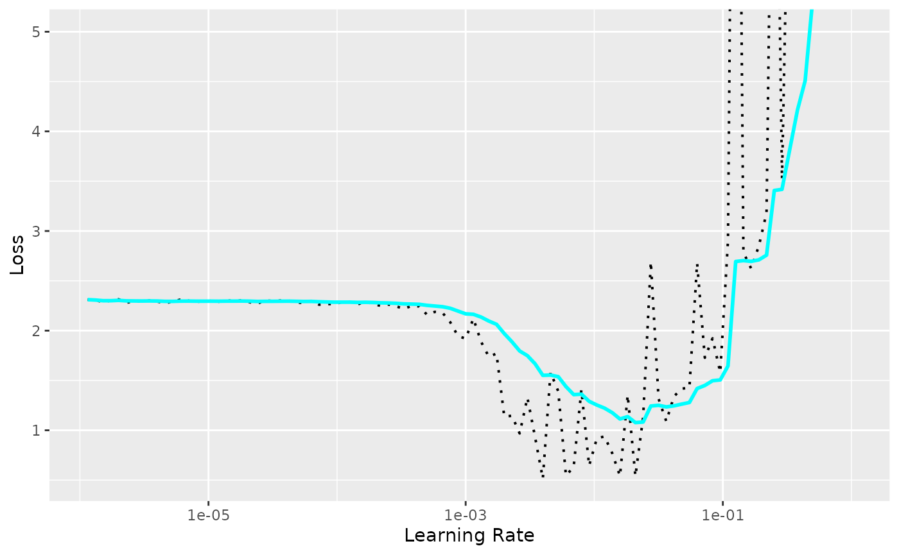

library(luz)
library(torch)
library(torchvision)
set.seed(1)
torch::torch_manual_seed(1703)In this article we discuss how to find a good learning rate for your model. Finding a good learning rate is essential to be able to fit your model. If it’s too low, you will need too many iterations for your loss to converge, and that might be impractical if your model takes too long to run. If it’s too high, the loss can explode and you might never be able to minimize the loss.
The learning rate can be considered another hyperparameter of your model that needs to be tuned but, there are techniques that allow you to select a good learning rate for your model without having to use the costly strategy of fitting many models with different learning rates and then choosing the one with better results.
This article by Leslie
Smith that became popular once their approach had been implemented in
the popular FastAI framework, proposes that we should start with a very
small learning rate and slowly increase it until we reach a high
learning rate. At each iteration we record the loss value and in the end
we plot it against the learning rate. We can then use these results to
decide on a good learning rate. That’s what lr_finder does,
and we will show how to use it.
First let’s download and prepare the MNIST dataset:
dir <- "~/Downloads/mnist" # caching directory
train_ds <- mnist_dataset(
dir,
download = TRUE,
transform = transform_to_tensor
)
#> Dataset <mnist> (~12 MB) will be downloaded and processed if not already
#> available.
#> Downloading <mnist> ...
#> Processing <mnist>...
#> Dataset <mnist> downloaded and extracted successfully.
#> Dataset <mnist> loaded with 60000 images.We can now define our model. We are going to use a small, straightforward CNN in the LeNet style.
net <- nn_module(
"net",
initialize = function() {
self$features <- nn_sequential(
nn_conv2d(1, 32, 3, 1),
nn_relu(),
nn_max_pool2d(2),
nn_conv2d(32, 64, 3, 1),
nn_relu(),
nn_max_pool2d(2),
nn_dropout(0.1),
nn_flatten()
)
self$classifier <- nn_sequential(
nn_linear(1600, 128),
nn_dropout(0.1),
nn_linear(128, 10)
)
},
forward = function(x) {
x %>%
self$features() %>%
self$classifier()
}
)We can now use the lr_finder function to record the loss
with different learning rates. It’s important to use the learning rate
finder with all other hyperparameters of the model fixed because they
can influence the choice of the learning rate. For example, depending on
the batch size, you might want to choose different learning rates.
model <- net %>% setup(
loss = torch::nn_cross_entropy_loss(),
optimizer = torch::optim_adam
)
records <- lr_finder(
object = model,
data = train_ds,
verbose = FALSE,
dataloader_options = list(batch_size = 32),
start_lr = 1e-6, # the smallest value that will be tried
end_lr = 1 # the largest value to be experimented with
)
str(records)
#> Classes 'lr_records' and 'data.frame': 100 obs. of 2 variables:
#> $ lr : num 1.15e-06 1.32e-06 1.51e-06 1.74e-06 2.00e-06 ...
#> $ loss: num 2.31 2.3 2.29 2.3 2.31 ...The result is a data frame with the losses and the learning rate in each step. You can use the built-in plot method to display the exact results, along with a exponentially smoothed value of the loss.
plot(records) +
ggplot2::coord_cartesian(ylim = c(NA, 5))
We can see that with small learning rates the loss doesn’t decrease. At some point the loss starts decreasing until it reaches a point where it starts increasing and explodes.
And how do we choose the learning rate using this plot? Sylvain Gugger asked the same question in this blog post and we are quoting his answer:
Not the one corresponding to the minimum. Why? Well the learning rate that corresponds to the minimum value is already a bit too high, since we are at the edge between improving and getting all over the place. We want to go one order of magnitude before, a value that’s still aggressive (so that we train quickly) but still on the safe side from an explosion.
In the above example we would choose 1e-3 instead of 1e-2.